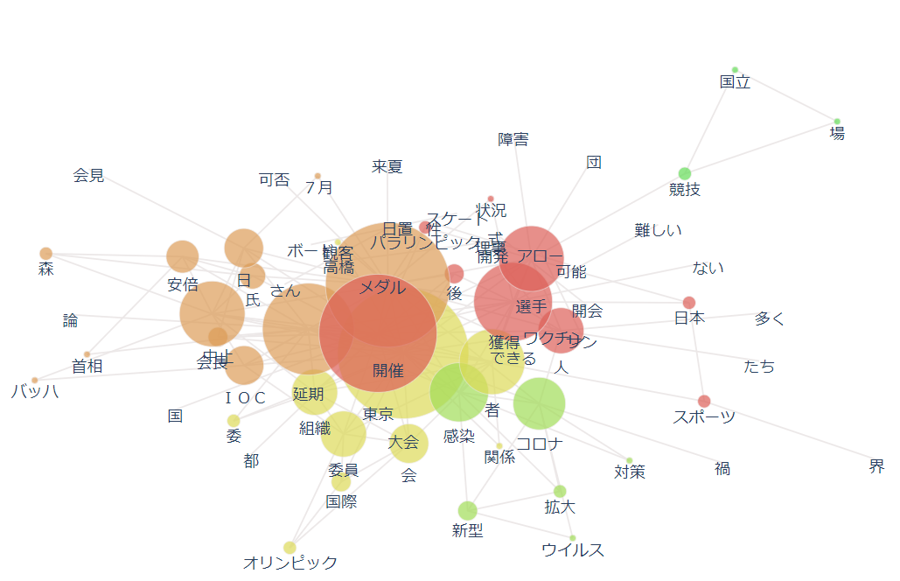

共起ネットワークから見る１９６４年と２０２０～２０２１年の東京オリンピック
1964年の東京オリンピック

2020-2021年の東京オリンピック
これらから分かることは、１９６４年では「コレラ」や「病」、②０２０－２０２１年では「感染」・「コロナ」・ 「ワクチン」等のワードが出てきていることが分かる。
また、コレラは選手から派生しているのに対し、２０２０年の感染は大会にかかっており、延期というワードも 出ていたことから、２０２０年ー２０２１年では感染拡大がオリンピックに大きな影響を及ぼしたことが分かる。
他にも、１９６４年ではアジアや黒人というワードが出ていたのに対し、２０２０ー２０２１年では、 パラリンピックというワードが出て来ていた。
よって、世界的に幅広い差別が無くなって来ていることが伺える。
加えて、１９６４年では、選手や準備等のオリンピック開催に基づくワードが出ているのに対し、 ２０２０－２０２１年では、 安倍や森、 国・組織・会見等のワードが出ていることから、政治が大いに関与したオリンピックになったと捉えられる。